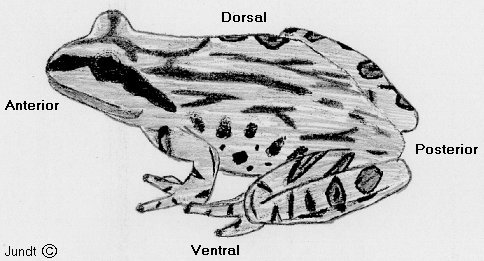

Species Identification Guides to Amphibians of the USA
The links to identification guides below—stratified by geographic region—are available to help you learn how to identify the amphibian species you are likely to encounter in your area, wherever you may be planning a field trip, or in the USA in general. These guides provide a brief description along with several pictures of amphibian species, in addition to geographic range maps showing approximate locations of where each species may be found.
Please keep in mind that being captured in a picture is far less stressful than being captured physically! A good photo often suffices for identification purposes. Also before capturing any animals make sure that you know which species are protected by law!
